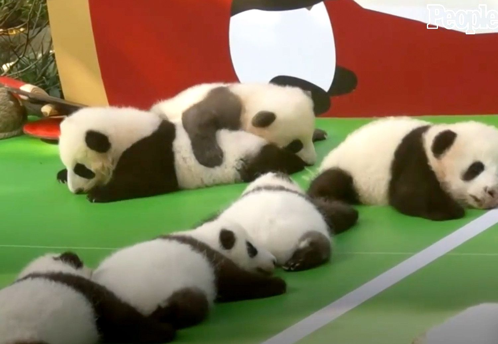

...

Giant Panda
@giant-panda.Jul 30
The giant panda (Ailuropoda melanoleuca, sometimes panda bear or simply panda), is a bear species endemic to
China.[4] It is characterised by its bold black-and-white coat and rotund body. The name "giant panda" is
sometimes used to distinguish it from the red panda, a neighboring musteloid. Though it belongs to the order
Carnivora, the giant panda is a folivore, with bamboo shoots and leaves making up more than 99% of its diet.

The red panda has soft thick fur—rich reddish.
The face is white, with a stripe of red-brown from each eye to the corners of the mouth, and the
bushy tail is faintly ringed. The head and body length of the red panda is 50–65 cm (20–26 inches)
and the tail 30–50 cm (12–20 inches) long, and the weight ranges from 3 to 6.2 kg (6.5 to 14
pounds). The feet have hairy soles, and the claws are semi-retractile.